작성자: 허필원
지난 9월 5일, GIST 기계공학동에서는 80여 명의 학생들이 한자리에 모여 모터 기술의 미래를 체험하는 특별한 하루가 펼쳐졌습니다. 전문가 강연부터 로봇 데모, 그리고 유명 유튜버 수드레곤과의 만남까지—2025 Motor Day의 생생한 현장을 전해드립니다.
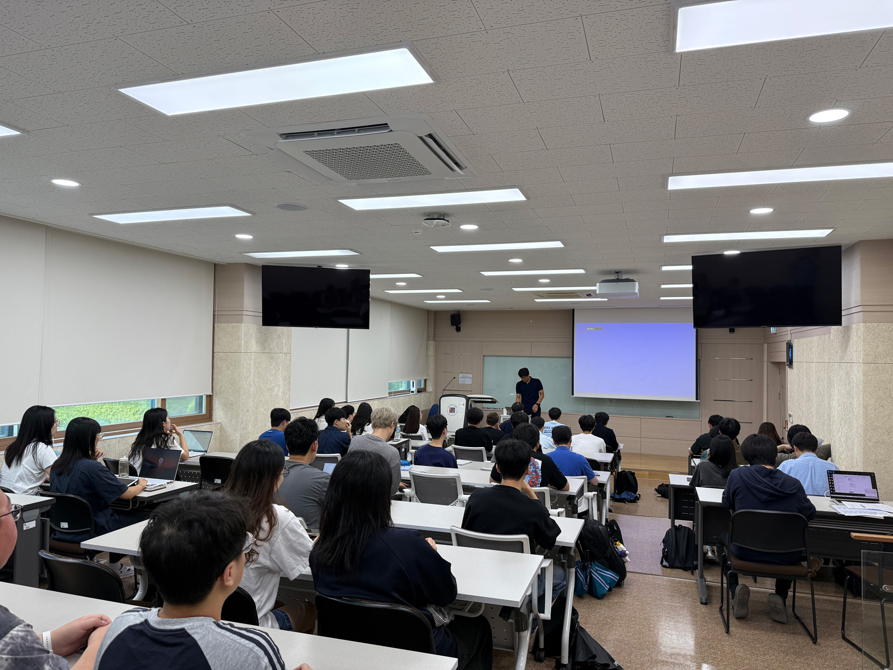
Motor Day는 삼성-GIST 지능형 모터 인재양성 센터(모터트랙)에서 주최하는 연례 행사입니다. GIST 학생들에게 모터 기술의 무한한 가능성을 소개하고, 캠퍼스 내 모터를 핵심적으로 활용하는 연구실들을 만나볼 수 있는 기회를 제공하기 위해 기획되었습니다.
모터트랙은 삼성전자 생활가전(DA)사업부와 GIST가 협력하여 운영하는 채용 연계형 인재 양성 과정입니다. 2023년 2월 협약 체결 후 본격 운영을 시작하여, 차세대 가전 개발의 핵심인 모터 분야의 전문 인력을 육성하고 있습니다.
등록금 전액 및 생활비 지원
졸업 후 삼성전자 DA사업부 입사 보장
삼성전자 인턴십 (재학 중 6주)
국내외 학회 참가 및 해외 연구소 견학 지원 (일본 오사카 연구소, Nidec, Yaskawa, Nagoya University 등)
학생들은 모터 제어, 설계, 신호처리, AI 분야의 맞춤형 커리큘럼을 이수하며, 삼성전자 실무진이 직접 멘토로 참여하는 융합 프로젝트를 통해 현장 감각을 익힙니다.
9월 첫 주를 맞아 지능형 모터 융합 프로젝트 수업의 첫 대면 수업이 진행되었습니다. 모터트랙 센터장인 허필원 교수가 직접 수업을 이끌며, 30명의 학생들을 관심 분야와 특기에 따라 6개 조로 편성했습니다.
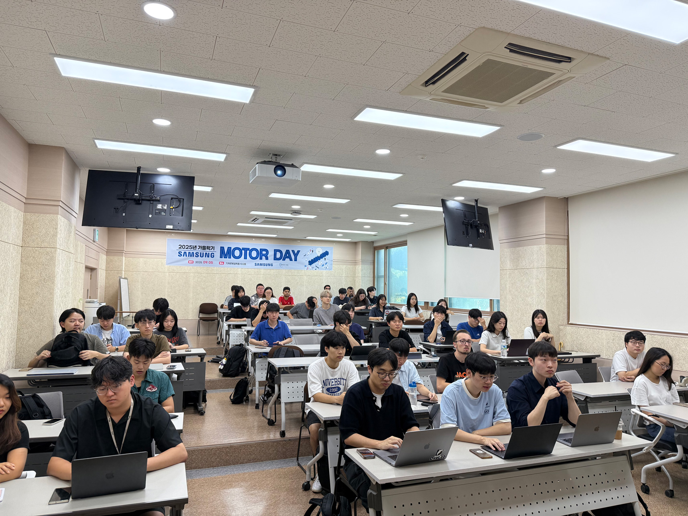
각 조는 한 학기 동안 삼성전자 실무 멘토들과 함께 진행할 프로젝트 주제를 선정하기 위한 열띤 회의를 시작했습니다. 스마트 쿠킹 시스템, AI 기반 세탁 최적화, 드론 경량화 등 다양한 아이디어가 쏟아져 나왔습니다.
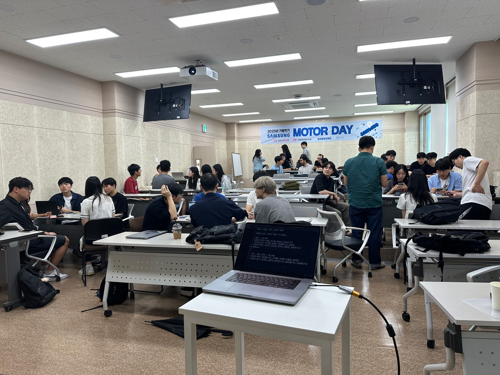
이날 행사의 하이라이트는 바로 유명 유튜버 수드레곤의 초청이었습니다. 원래 일정은 오후 3시 30분 강연부터였지만, 수드레곤은 무려 오전 11시 30분에 이미 학교에 도착했습니다!
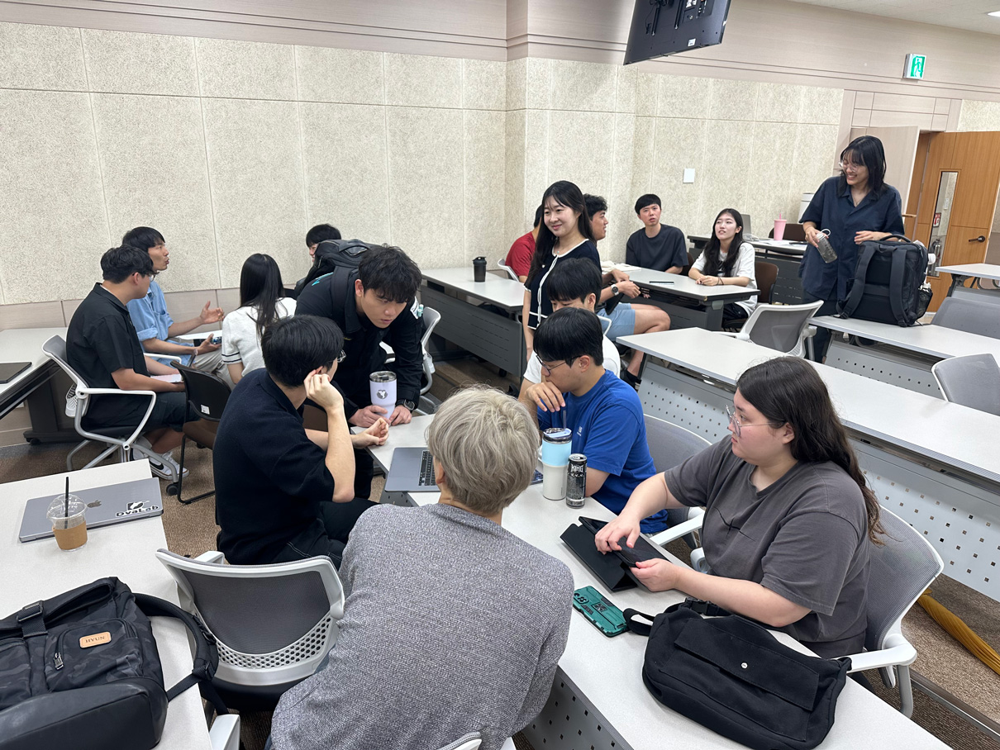
고맙게도 수드레곤은 이 시간을 학생들과의 소통에 아낌없이 사용했습니다:
조별 회의 참여: 각 조의 프로젝트 회의에 조용히 합류하여 자신의 의견을 나누고, 학생들의 아이디어에 귀 기울이며 학습 의지와 사기를 높여주었습니다.
점심 식사: 격식 없이 학생들과 함께 도시락을 나누며 편안한 대화를 이어갔습니다.
로봇 데모 체험: 휴머노이드 로봇, 외골격 로봇, 로봇 매니퓰레이터에 깊은 관심을 보이며 질문을 던지고 학생들과 소통했습니다.
특히 자작 전기자동차 동아리 지붕이의 차량에 큰 관심을 보이며, 설계와 제어에 관해 1시간 이상 심도 깊은 논의를 나누기도 했습니다.
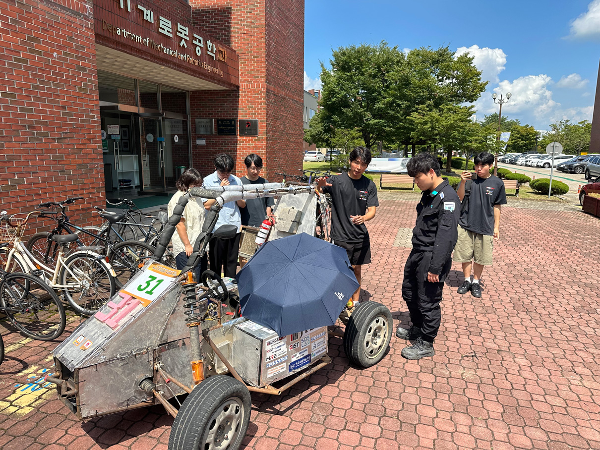
기계공학동 로비는 생동감 넘치는 데모 현장으로 변모했습니다. 모터를 활용하는 다양한 연구실과 동아리가 참여하여 학생들에게 직접 체험의 기회를 제공했습니다.
착용형 보행 외골격 로봇: 학생들이 직접 착용하여 보행 보조 기술을 체험
로봇 매니퓰레이터 임피던스 제어: 모터의 제어 파라미터를 직접 조절하며 임피던스 변화를 체감하는 실습
휴머노이드 로봇: 메카트로닉스와 제어 기술의 정수를 보여주는 데모
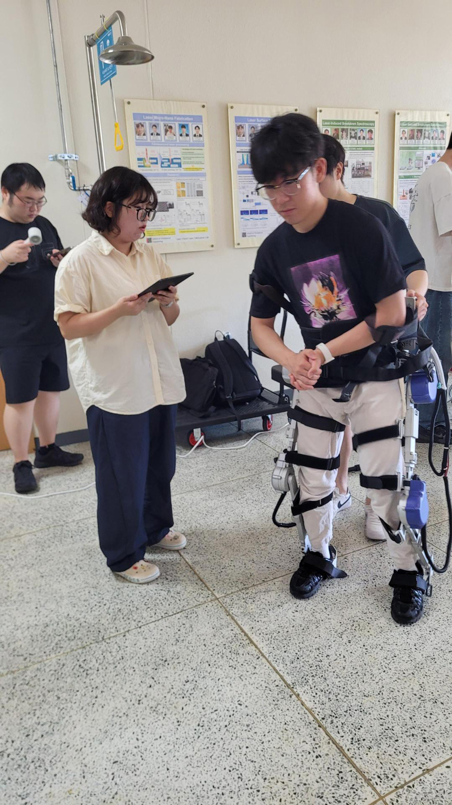
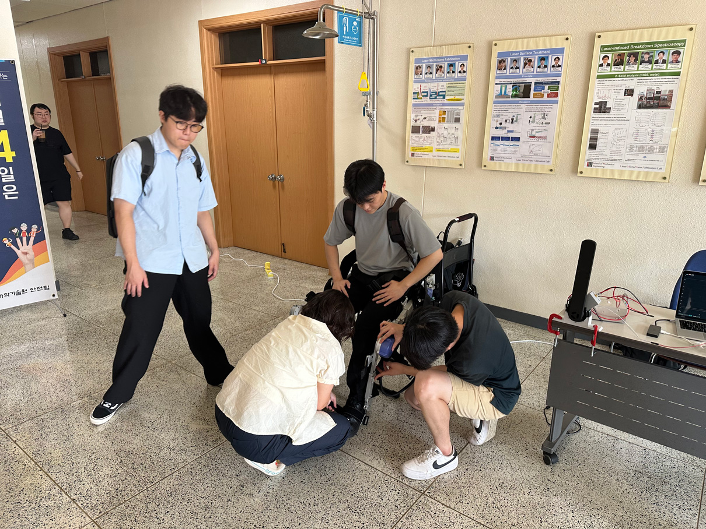
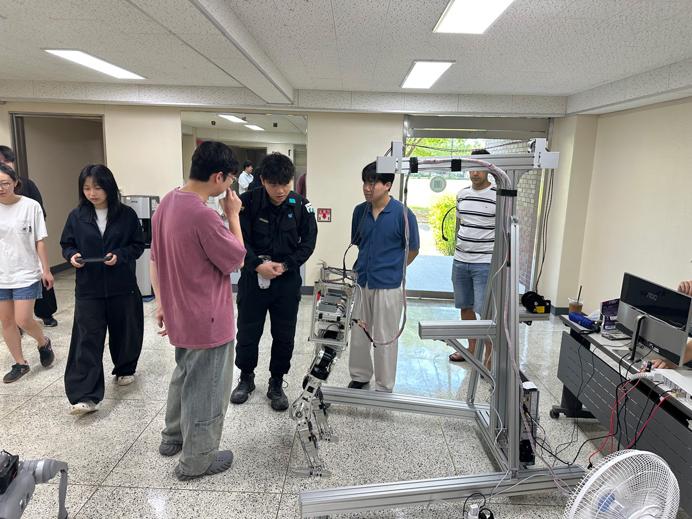
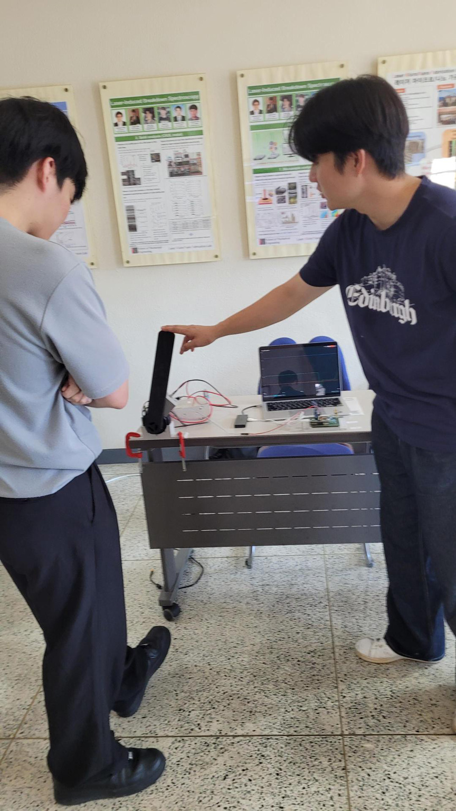
4족보행 로봇 데모로 많은 학생들의 시선을 사로잡았습니다. 마치 살아있는 것처럼 움직이는 로봇 개에 학생들은 탄성을 자아냈습니다. 아래 사진은 허필원 교수님 연구실의 학생들이 4족보행 로봇을 조작하는 모습입니다.
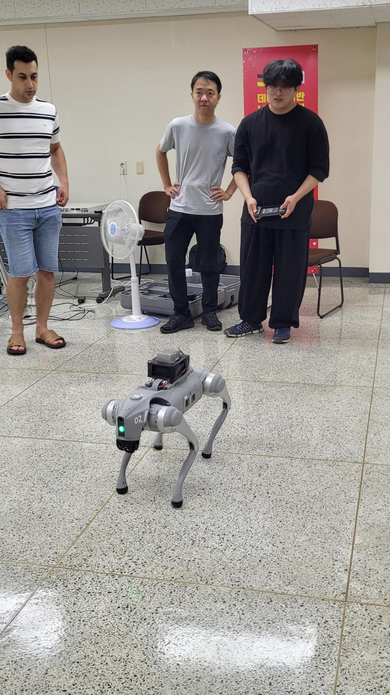
학생들이 직접 설계하고 제작한 전기 자동차를 탑승 체험할 수 있는 기회를 제공하여 큰 인기를 끌었습니다.
삼성전자 DA사업부의 구본길 프로님께서 "미래 가전 기술 동향"이라는 주제로 전문가 강연을 진행해 주셨습니다. 산업 현장의 생생한 이야기와 미래 기술에 대한 통찰력 있는 강연에 학생들은 진지하게 귀를 기울였습니다.
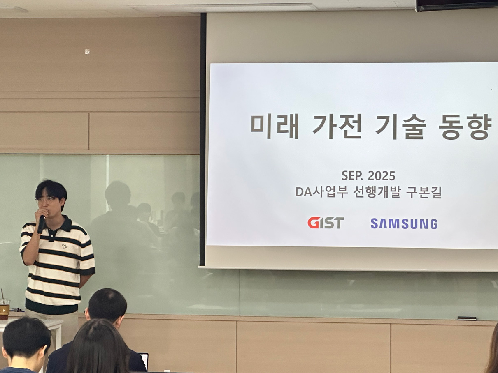
오후 3시 30분, 드디어 수드레곤의 공식 강연이 시작되었습니다. 기계공학동 102호 강의실을 가득 메운 80여 명의 학생들 앞에서, 수드레곤은 긱블의 철학과 프로젝트 경험담을 진솔하게 풀어놓았습니다.
수드레곤은 긱블에서 진행했던 다양한 프로젝트들을 소개했습니다. 닭을 때려서 익히기, 512개 전구 연결하기, 자석을 돌려 고기 굽기, 자동 스파게티 포크 등 언뜻 쓸모없어 보이는 도전들이었지만, 그 과정에서 배운 것들은 결코 쓸모없지 않았습니다.
강연의 핵심은 "해보기 전에는 절대 모른다"는 것이었습니다. 수드레곤은 교과서에서는 쉬워 보이는 문제들이 실제 구현에서는 전혀 다른 양상을 보인다는 것을 생생한 사례로 설명했습니다:
닭 때려 익히기: 에너지 보존 법칙에 따라 충격이 열로 변환된다는 이론은 맞았지만, 8시간을 때려도 42도에 불과했습니다. 핵심은 충격량이 아니라 단열이었고, 랩을 두껍게 감자 비로소 온도가 올랐습니다.
자동 스파게티 포크: DC 모터를 돌리면 발생하는 전자파 노이즈 때문에 블루투스 통신이 완전히 마비되었습니다. 스펙 시트에는 나오지 않는, 직접 해봐야만 알 수 있는 문제였습니다.
DC 모터의 브러시: 순간적인 충격이 반복되자 브러시에서 고소한 냄새가 나며 모터가 타버렸습니다.
수드레곤은 학생들에게 수업과 학점도 중요하지만, 아무리 사소해 보여도 직접 프로젝트를 해봐야 한다고 강조했습니다. 미니카 모터 하나 돌리는 것도 큰 자산이 될 수 있으며, 흥미 있는 프로젝트를 찾는 것 자체가 훈련이라고 조언했습니다.
또한 학교가 제공하는 캡스톤 디자인, 모터트랙, 연구생 제도 같은 지원 프로그램을 적극 활용하라고 권했습니다. "학교는 실패하라고 있는 곳"이라며, 학생 때 충분한 실패 경험을 쌓는 것이 중요하다고 강조했습니다.
강연 내내 학생들은 수드레곤의 경험담에 공감하며 고개를 끄덕였고, 질의응답 시간에는 콘텐츠 제작 계기, 좋아하는 일과 잘하는 일의 선택 등 다양한 주제로 활발한 대화가 오갔습니다.
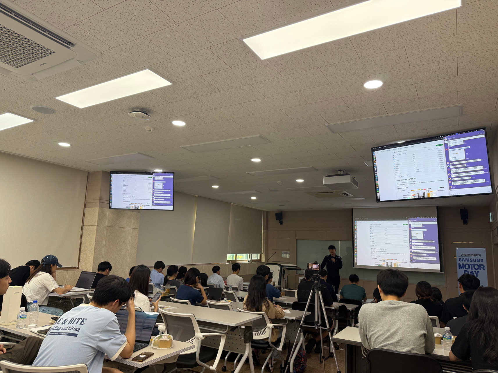
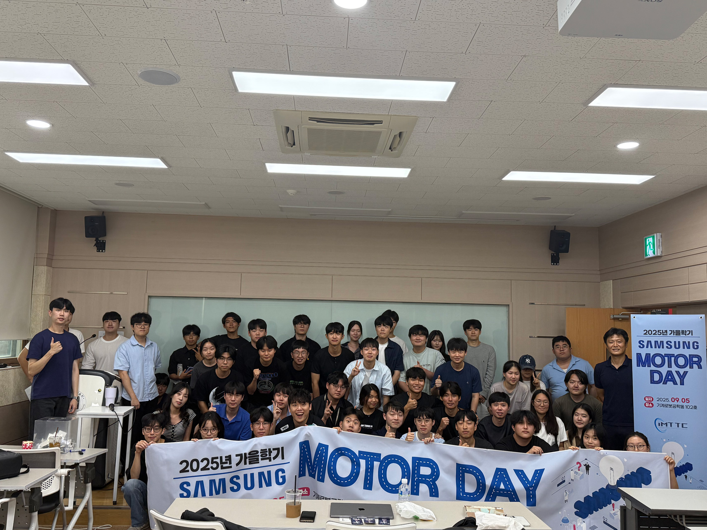
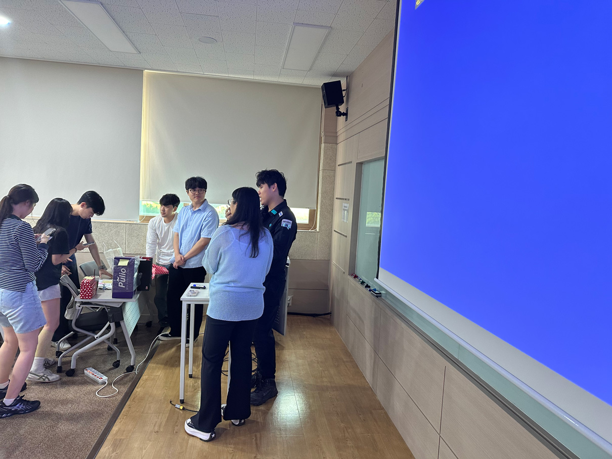
원래 기계공학동 야외 잔디밭에서 바베큐 파티를 계획했지만, 비 예보로 인해 오룡관 레스토랑으로 장소를 옮겨 진행했습니다. (다행히 실제로 비는 오지 않았지만요!)
바베큐와 뷔페가 어우러진 풍성한 저녁 식사 자리에서도 수드레곤은 끝까지 함께해 주었습니다. 행사 때 미처 나누지 못했던 다양한 경험담과 긱블 프로젝트의 비하인드 스토리를 들려주며, 학생들에게 소중한 인사이트를 전해주었습니다.
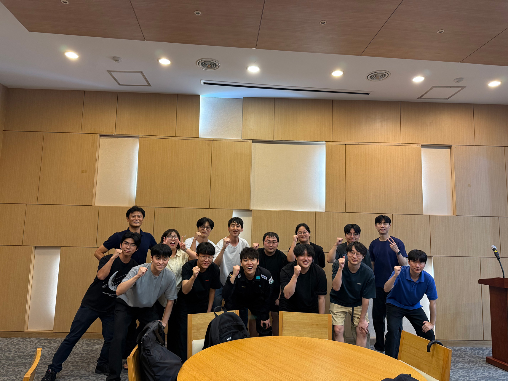
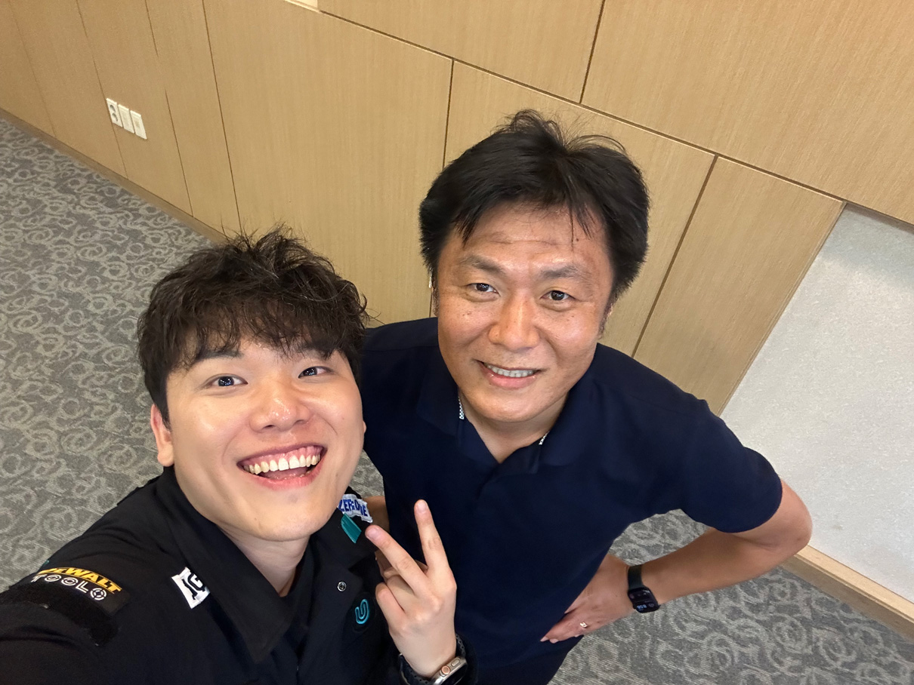
2025 Motor Day는 단순한 행사를 넘어, 학생들에게 모터 기술의 무한한 가능성을 직접 경험하고 느낄 수 있는 소중한 기회였습니다. 삼성전자 전문가 강연, 최첨단 로봇 데모, 그리고 수드레곤과의 진솔한 만남까지—이 모든 것이 어우러져 잊지 못할 하루가 되었습니다.
모터트랙은 앞으로도 학생들이 도전하고 성장할 수 있는 다양한 기회를 제공할 예정입니다. 모터와 가전 기술, 그리고 미래 산업에 관심 있는 분들의 많은 관심 부탁드립니다!